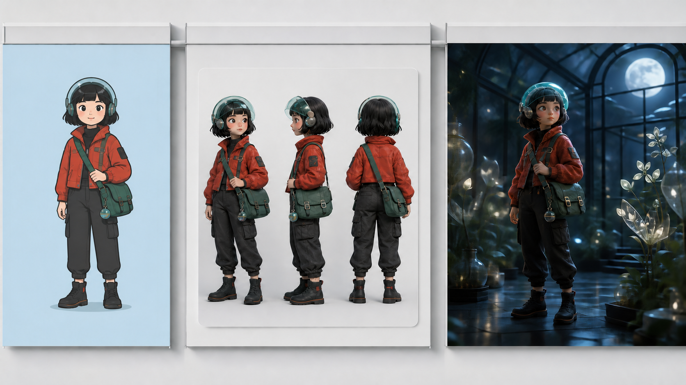

身份不丢
角色是谁，比材质有多精致更重要。
不是把图变漂亮，而是让角色真正进入场景。
从一张普通二维插画或演示文稿开始，先提取人物身份、服饰和道具，再建立稳定的三维角色卡、空间关系和可以继续拍摄的镜头世界。

先建立身份和视觉基准，再扩展场景；这样换题材时只需要替换输入素材，方法仍然成立。
普通插画、演示文稿、照片或已有设定。
保留：核心识别点找出人物身份、动作、服饰、道具和需要修正的问题。
得到：转换规则固定正侧背、比例、表情、材质和关键细节。
得到：视觉基准让角色拥有稳定体积、材质与可复用的外观。
得到：角色母版确定空间、时间、光线、道具位置和角色站位。
得到：场景基准按信息和情绪需要安排景别、机位与动作。
得到：镜头方案确认身份、服饰、空间和动作在前后镜头中一致。
得到：可续接素材角色是谁，比材质有多精致更重要。
服饰、道具和姿态继续承担原来的信息。
空间关系可以支持下一镜，而不是只出一张海报。
保留转换规则，只替换人物、服饰、道具和场景素材。
二维信息怎样进入三维
身份、外观与关键道具
空间、光线与站位关系
景别、动作与连续性记录